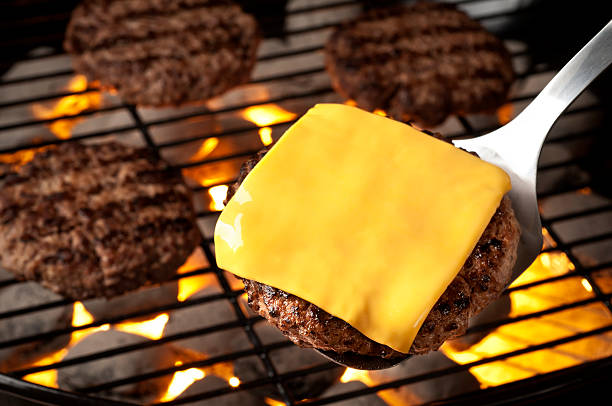

Cheeseburger Recipe

This fun and easy recipe will have you creating a juicy cheesburger that the whole family will love!!
Ingredients Needed:
- 2 pounds extra-lean ground beef
- 1 (1 oz) package dry onion soup mix
- 1 egg, lightly beaten
- 2 teaspoons hot pepper sauce
- 2 teaspoons worcestershire sauce
- 1/4 teaspoon ground black pepper
- 3/4 cup rolled oats
Steps
- Preheat an outdoor grill for medium high heat and lightly oil grate
- In a large bowl, combine the beef, onion soup mix, egg, hot & worcestershire sauces and oats
- Shape mixture into 6 patties
- Grill patties over medium high heat for 10 to 20 minutes, or to desired doneness